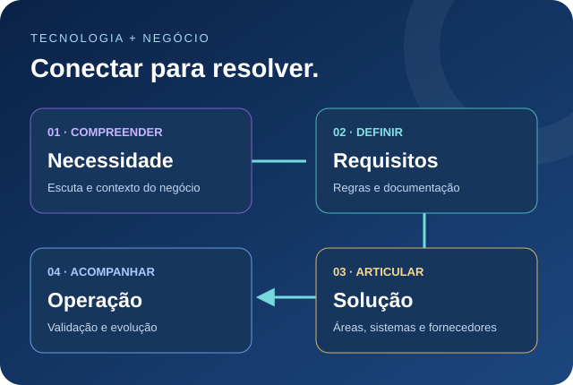

Sistemas · Processos · Pessoas
01 Perfil profissional
Entre o desafio do negócio
e a solução em tecnologia.

Competências aplicadas aos desafios das empresas
02 Trajetória
Experiência construída
perto da operação.
Experiência profissional
Ver outras experiências
Formação acadêmica
Cursos e desenvolvimento
Ver outros cursos
03 Habilidades
Conhecimento técnico.
Conexão humana.
04 Inovação e projetos
Inovação reconhecida.
Transformação em movimento.
Projetos & iniciativas profissionais
05 Projetos e soluções digitais
Do problema prático
à ferramenta.
Soluções digitais para otimizar rotinas, melhorar processos e facilitar o tratamento de informações.
Contato
Novos desafios.
Novas possibilidades.
Oportunidades profissionais, sistemas corporativos, integração entre áreas e melhoria de processos.